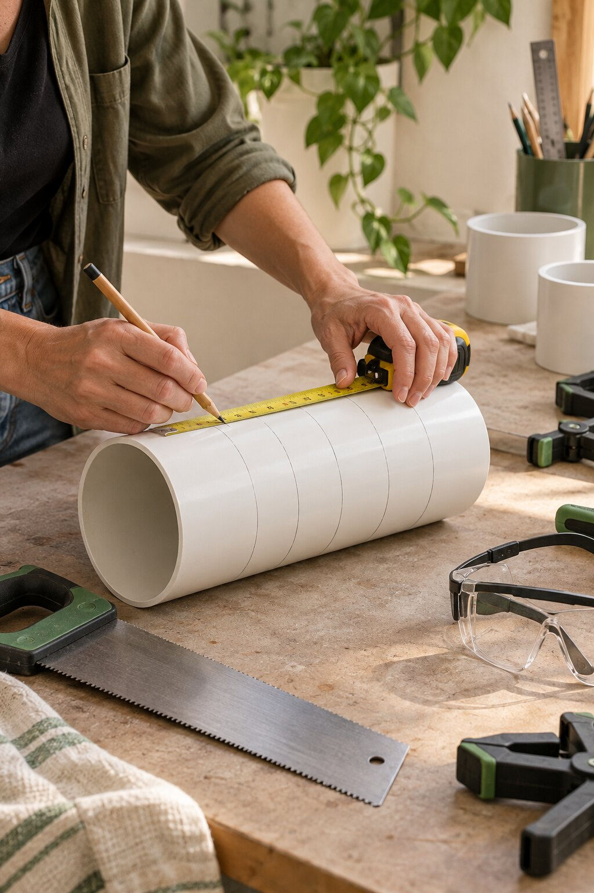
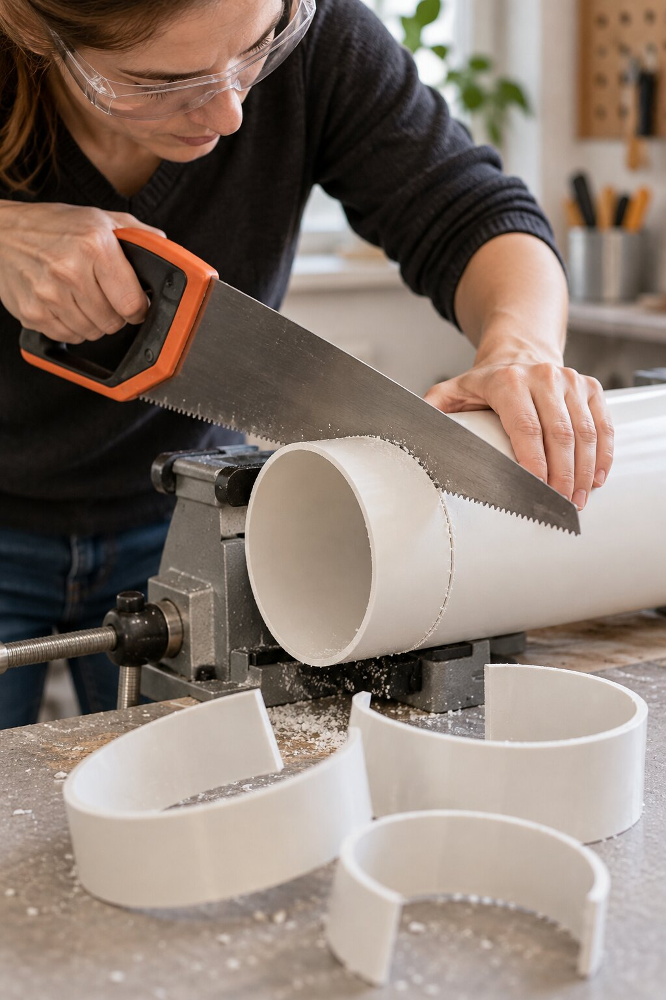
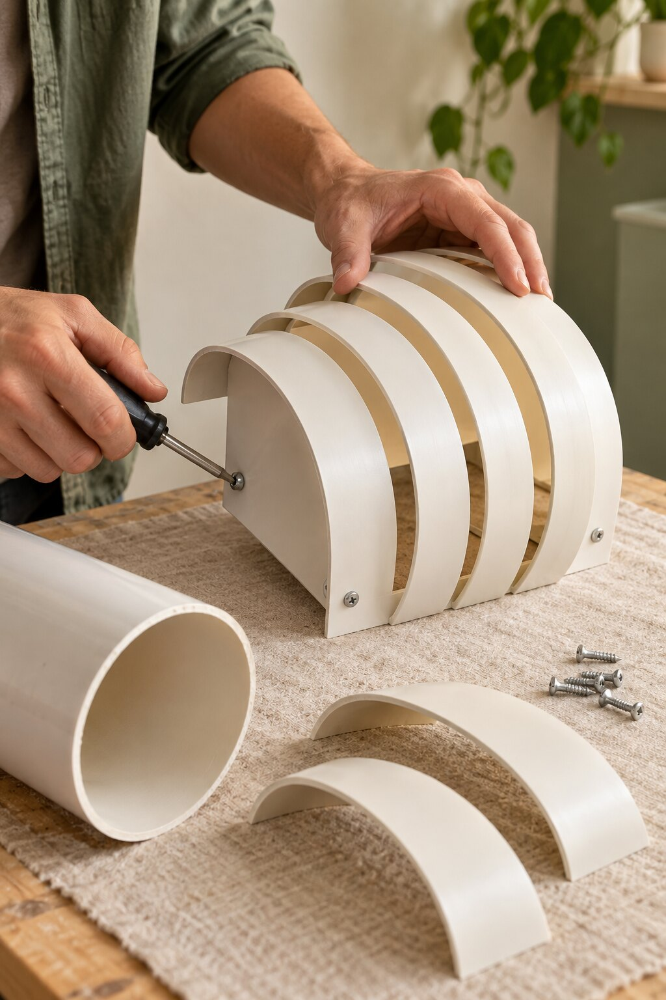

Das brauchst du
- 01KunststoffrohrEin kurzes, ausreichend breites Rohrstück aus geeignetem Kunststoff, zum Beispiel ein Reststück. Nicht aus einer aktiven Wasser- oder Gasleitung entnehmen.
- 02LED-Licht mit wenig WärmeEine fertige, geprüfte LED-Leuchte oder ein LED-Modul nach Herstellerangabe.
- 03Werkzeug & BefestigungMaßband, Stift, feine Handsäge, Schraubzwinge, Schleifpapier, passende Schrauben und Halterung für Wand und Rohrmaterial.
- 04OberflächeKunststoffgeeignete Grundierung und Farbe oder Sprühlack; Abdeckfolie, Handschuhe und Schutzbrille.
Schritt für Schritt
Die Bilder begleiten einen möglichen Nachbau. Halte die Bögen zunächst lose zusammen und prüfe Form und Abstände, bevor du sie endgültig befestigst.
-
01
Rohr abmessen und anzeichnen
Lege fest, wie tief und breit die Leuchte werden soll. Markiere auf dem Rohr mehrere gleichmäßige Abschnitte. Eine gleichmäßige Aufteilung sorgt später für den ruhigen, gestaffelten Bogen-Look.
Tipp: Erst ein kleines Muster aus Karton oder einem Reststück anlegen, dann die endgültigen Maße übertragen.

Gleichmäßige Markierungen geben den Bögen ihren Rhythmus. -
02
Rohrstücke zuschneiden und Kanten glätten
Spanne das Rohr sicher fest und säge langsam entlang der Markierungen. Teile die entstandenen Rohr-Ringe anschließend längs auf, damit gebogene Segmente entstehen. Glätte alle Schnittkanten vorsichtig mit Schleifpapier und entferne den Staub.
Sicher arbeiten: Schutzbrille tragen, Werkstück einspannen und beim Sägen Abstand zu den Fingern halten.

Die gebogenen Segmente bilden die einzelnen Lichtbögen. -
03
Bögen staffeln und sicher befestigen
Ordne die Segmente von groß nach klein an und lasse dazwischen gleichmäßige Lichtschlitze. Befestige sie mit für Kunststoff geeigneten Schrauben an einer passenden Träger- oder Montageplatte. Prüfe, dass keine Schraubenspitze in den Bereich von LED oder Kabel ragt.
Vor dem Lackieren: Trocken zusammensetzen, aus verschiedenen Blickwinkeln prüfen und erst dann fixieren.

Die versetzten Rohrbögen lassen das Licht zwischen den Lagen austreten. -
04
Farbe, LED und Wandmontage ergänzen
Grundiere und lackiere die Leuchte mit einem für den Kunststoff geeigneten Produkt. Arbeite im Freien oder sehr gut belüftet und halte dich an die Herstellerangaben. Nach vollständigem Trocknen kommt ausschließlich eine kühle LED-Lichtquelle hinein. Montiere die Leuchte mit passendem Befestigungsmaterial an der Wand.
Wichtig: Keine Glühlampe oder andere heiße Lichtquelle verwenden. Arbeiten an 230-Volt-Anschlüssen gehören in die Hände einer Elektrofachkraft.
Warmweißes LED-Licht hebt die gestaffelte Form und ihre Schatten hervor.
Bevor sie leuchtet
Kontrolliere Halt, Abstand der Kunststoffteile zur Lichtquelle und die Temperatur nach einem kurzen Probelauf. Die Leuchte muss fest sitzen, Lüftungsschlitze dürfen nicht verdeckt sein, und Kunststoff darf sich nicht erwärmen. Bei Zweifel ausschalten und die Konstruktion anpassen.
← Mehr DIY-Ideen entdecken